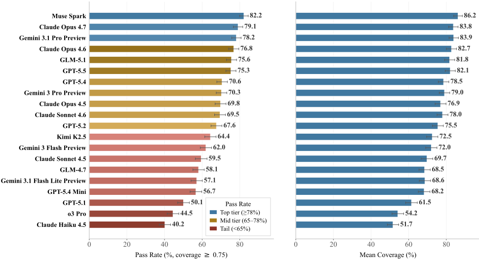
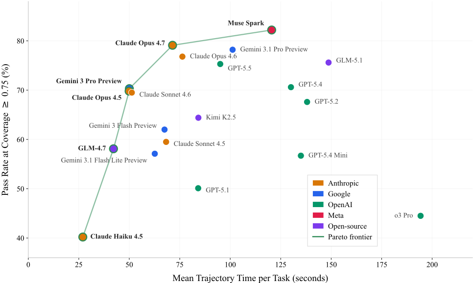
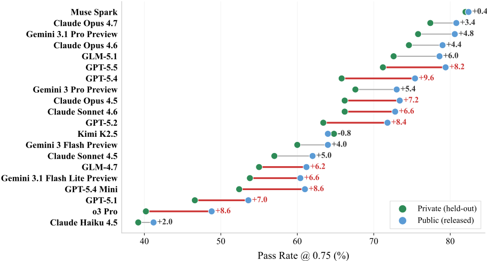

MCP-Atlas: A Large-Scale Benchmark for Tool-Use Competency with Real MCP Servers
MCP-Atlas：基于真实 MCP Server 的大规模工具使用能力评测基准
简介
现有 MCP 评测在跨 server 多步编排、真实 server 覆盖与可复现的结构化评分三方面存在不足。MCP-Atlas 构建了 1,000 个由专家编写并校验的自然语言任务，覆盖 36 个生产级 MCP server 与 220 个工具；提示不指明 server/工具/参数，并混入语义相近的干扰工具，采用基于原子事实断言的 claim-level rubric 评分（coverage ≥ 0.75 判通过），配 11 类失败归因分类法与三个独立 LLM judge 交叉校验。对 20 个前沿模型的评测显示：最高通过率 82.2%，63.3% 的失败为认知性而非工具调用性错误，强模型的典型失败是早停与错误综合，o3 Pro 有 40.1% 的失败轨迹完全未调用工具。该基准为团队的 Agent 模型选型、内部评测 rubric 设计与失败归因提供了可直接复用的方法与 harness。
问题
现有 MCP/工具使用评测存在三大缺口：(i) 缺少带分支与跨 server 编排的真实多步工作流；(ii) 缺少对真实 MCP server（而非 mock 实现）的广度覆盖；(iii) 缺少与 Agent 输出冗长度或风格解耦的、结构化可复现的 claim 级评分。论文要构建一个同时满足规模、真实性与评分客观性的工具使用能力基准，并能区分 Agent 失败究竟发生在工具调用环节还是认知环节。
方法
构建 1,000 个专家人工编写并经 5 层质量校验的任务，执行于 36 个容器化、版本固定的生产级 MCP server（220 个工具，覆盖 BASIC/ANALYTICS/PRODUCTIVITY/FINANCIAL/CODING 五类环境）；每任务暴露 6-37 个工具（均值 15.2），其中仅 2-8 个必需，其余为语义相近的干扰项，98.6% 任务需跨 ≥2 个 server 编排；提示为单轮自然语言且不点名任何 server/工具/参数。评分采用 claim-level rubric：每任务定义原子可验证事实断言（均值 4.7 条），judge 按 fulfilled/partially/not 三档打分，任务级 coverage ≥ 0.75 判通过，pass/fail 只看最终答案与断言的匹配、与调用轨迹解耦；另用 11 类失败分类法（4 类工具调用 + 7 类认知）做自动归因，三个独立 LLM judge 交叉校验，500/500 公私 split 用于复现与污染监控。
关键结果
20 个前沿模型中最高通过率 82.2%（Muse Spark），Claude Opus 4.7 79.1%、Gemini 3.1 Pro Preview 78.2%，开源 GLM-5.1 75.6% 进入第一梯队；o3 Pro 仅 44.5%
约 6,900 个已诊断失败中 63.3% 为认知性、36.7% 为工具调用相关
早停是部分强模型的标志性失败：Gemini 3.1 Pro Preview、GPT-5.4、Claude Opus 4.6 分别在 42.8%、41.4%、36.3% 的失败中早停；GPT-5.5 与 Claude Opus 4.7 早停仅 3.6%/3.8%，但 faulty synthesis 升至 19.8%/25.0%
o3 Pro 57.6% 的失败为工具相关，40.1% 的失败轨迹完全未调用工具
98.6% 任务需跨 ≥2 个 server 编排（均值 2.55 个）；每任务工具集 6-37 个（均值 15.2），其中仅 2-8 个必需（均值 4.1），干扰工具均值 11.1 个
三个 judge 间每模型分数范围 2.1-4.6 个百分点；0.50 与 0.75 覆盖阈值下排名的 Spearman 秩相关 ρ=0.965
效率 Pareto 前沿：Claude Haiku 4.5（27s, 40.2%）至 Muse Spark（121s, 82.2%）；o3 Pro（194s, 44.5%）被严格支配；GLM-5.1 均值 149s/任务，约为同精度 Claude Opus 4.6/4.7 的两倍
公私 split 分差 -0.8 至 +9.6 pp，OpenAI 模型聚类 +8.4 pp，Kimi K2.5 是唯一私集高于公集的模型（-0.8 pp）
创新点
相对已有 MCP 评测（MCP-Universe、Toolathlon、MCPMark、MCPEval、MCP-Bench、LiveMCPBench、MCPVerse、MCP-RADAR 等），MCP-Atlas 首次同时做到：千题规模 + 全真实生产 server + 系统性干扰工具设计 + claim 级部分得分评分（替代整体 LLM-as-judge 的风格偏差与轨迹匹配对合理替代路径的惩罚），并配套 11 类失败归因分类法、三 judge 交叉校验与公私 split 完整性机制，将'工具调用失败'与'认知失败'解耦分析。
团队参考意义
相关度级别：high
命中能力域：3.3 Agent 架构与工具使用 | 3.5 评测与可靠使用
理由：论文直接命中团队两个核心能力域：3.3（MCP 工具协议、Agent harness 设计、单 Agent 执行可靠性——团队日常用 LLM/Agent 构建工程自动化工具，工具调用与 MCP 是核心技术栈）与 3.5（评测基准与方法、可靠性、成本效率）。该基准不仅给出 20 个前沿模型的工具使用能力画像与准确率-时延 Pareto 前沿可直接用于模型选型，其 claim-level rubric、干扰工具设计、11 类失败归因分类法与公私 split 防污染机制均可迁移为团队内部 Agent 评测体系的设计模板。'63.3% 失败是认知性'的结论对团队尤其有指导意义：Agent 优化的重点应放在停止准则与答案综合校验上，而非仅保证工具调用正确。
建议动作：深入精读并做内部分享
中文全文
arXiv:2602.00933v3 [cs.SE] 19 May 2026
IscaLe
MCP-Atlas: A Large-Scale Benchmark for Tool-Use Competency with Real MCP Servers
Abstract
模型上下文协议（Model Context Protocol, MCP）正在成为大语言模型（Large Language Model, LLM）Agent 发现并调用外部工具的标准接口。然而，现有的 MCP 评估在三个关键维度上存在不足：具有跨服务器编排的真实多步骤工作流、覆盖真实 MCP 服务器而非 mock 服务器的广度，以及与 Agent 冗长度或风格解耦的结构化、可复现的声明级评分。我们提出 MCP-Atlas，一个针对生产级 MCP 服务器衡量工具调用能力的基准测试（benchmark）。MCP-Atlas 包含 1,000 个由人类专家撰写并验证的自然语言任务，覆盖 36 个真实 MCP 服务器和 220 个工具。提示词（prompt）不指定服务器、工具或参数，要求 Agent 在语义上看似合理的干扰项中识别相关工具，并构建多步骤、跨服务器的工作流。每个任务均采用声明级评分细则进行评分，其中最终答案依据以工具输出为根据的原子化事实声明进行评分。这种以答案为中心的评分方式使得有效的替代性工具调用轨迹也能获得分数。我们为此配套了一个包含 11 个类别的诊断分类体系，将工具调用失败与任务理解、综合、解析和停止等环节中的认知失败区分开来。在匹配的任务级条件下评估来自六家提供商的 20 个前沿模型后，我们发现，在 0.75 的声明覆盖率阈值下通过率最高可达 82.2%，并呈现出清晰的三层性能结构。自动化诊断表明，在已诊断的失败中，63.3% 属于认知类失败，而非与工具调用相关。值得注意的是，若干表现优异的模型在成功执行工具之后，仍因过早停止或综合错误而失败。我们发布了任务模式（schema）、容器化测试框架（harness）、声明评估器以及一个包含 500 个任务的公开子集，同时保留一个包含 500 个任务的私有子集，以维护排行榜的公正性。代码发布于 https://github.com/scaleapi/mcp-atlas。
1 Introduction
Large Language Models are increasingly deployed as agents that plan, invoke, and integrate external tools to accomplish complex user objectives. The Model Context Protocol (MCP) [1, 2] has become the standard usage for this tool-use layer, providing uniform interfaces for server discovery, tool enumeration, typed parameter passing, and result consumption. Despite the rapid growth of MCP-based deployments, credibly evaluating such agents remains a significant challenge.
Practical deployments demand evaluations that simultaneously address three requirements: (i) realistic, multi-step workflows that involve branching and cross-server orchestration, (ii) breadth across authentic MCP servers and


APIs rather than mocked substitutes, and (iii) structured, reproducible, claim-level scoring that is disentangled from agent verbosity or stylistic preferences. Existing MCP-based benchmarks make progress along one or two of these but exhibit limitations on the third.
We introduce MCP-Atlas , a large-scale real-server benchmark designed to measure tool-use competency under realistic single-turn prompts that require complex multi-tool workflows. Each of the 1,000 tasks executes against live MCP endpoints and defines a set of atomic factual claims that any correct answer should satisfy. This claimlevel rubric decouples success from adherence to a specific trajectory, so alternative tool-call paths that yield the same factual claims receive full credit, while also supporting post-hoc diagnosis through an 11-category taxonomy.
Beyond overall task success rate, MCP-Atlas exposes a controlled tool set per task (6-37 tools, of which only 2-8 are relevant), mixing required tools with plausible distractors from semantically similar categories. This design directly targets the 'unknown-tools' challenge identified by prior work [3, 4], where agents must first discover which tools are relevant before invoking them. The benchmark spans 36 servers and 220 tools drawn from five application domains. The vast majority of tasks (98.6%) require orchestration across two or more servers, and most tasks involve multi-hop dependencies where later tool calls are parameterized by earlier outputs.
Experiments on 20 frontier models from four proprietary and two open-source model providers reveal a clear three-tier structure (Figure 1). A top cluster of three models sits between 78.2% and 82.2% pass rate within the confidence intervals, a mid-tier of eight models spans 67.6-76.8%, and a long tail of nine models extends down to 40.2%. Notably, the open-source GLM-5.1 reaches 75.6%, entering the top empirical band in this evaluation that was previously exclusive to proprietary models. At the same time, o3 Pro, a leading reasoning model on mathematical and coding benchmarks, finishes near the bottom at 44.5% because it produces no tool calls on 40% of its failed tasks.
Contributions. The main contributions of this work are:
2

| Benchmark | #S | #T | #Tasks | Cross-Server | Distractors | Natural Lang. | Real Servers |
|---|---|---|---|---|---|---|---|
| MCP-Universe [3] | 11 | 133 | 231 | ✓ | ✓ | ✓ | ✓ |
| MCPEval [4] | 5 | 19 | 676 | Partial | Partial | ✓ | |
| MCP-Bench [5] | 28 | 250 | 104 | ✓ | ✓ | ✓ | ✓ |
| Toolathlon [6] | 32 | 604 | 108 | ✓ | ✓ | ✓ | ✓ |
| MCPMark [7] | 5 | ∼ 50 | 127 | ✓ | ✓ | ||
| LiveMCPBench [8] | 70 | 527 | 95 | ✓ | ✓ | ✓ | ✓ |
| MCPVerse [9] | 65 | 552 | - | ✓ | ✓ | ✓ | Mixed |
| MCP-RADAR [10] | 42 | - | 507 | Partial | Mixed | Mixed | |
| MCP-Atlas (Ours) | 36 | 220 | 1,000 | ✓ | ✓ | ✓ | ✓ |
| Benchmark | #S | #T | #Tasks | Cross-Server | Distractors | Natural Lang. | Real Servers |
2.1 The Evolution from Static to Agentic Evaluation
大语言模型（LLM）的评估格局已发生重大转变：从静态的、以知识为中心的评估，转向衡量智能体能力的动态交互式范式。早期的基准测试（benchmark），例如 MMLU [11] 和 HELM [12]，聚焦于固定问题集，在隔离环境中评估事实回忆与推理能力。尽管这些基准测试具有奠基意义，但它们未能反映真实世界部署的要求——在真实部署中，模型必须与环境交互、应对不确定性，并动态调整计划。
后续工作引入了强调工具调用与环境交互的交互式评估。WebArena [13] 和 MiniWoB++ [14] 等基于网页的基准测试要求智能体导航并操作图形用户界面（GUI），以完成信息检索或在线购物等任务。OSWorld [15] 和 Android Arena [16] 等操作系统级测试套件将这一方式扩展到操作系统，测试多模态控制与长程规划能力。
API 与函数调用类基准测试进一步推动了该领域的发展。ToolBench [17] 聚合了数千个 RESTful API，用于多步任务。BFCL [18] 提供专注于函数调用的排行榜，涵盖合成 API 与真实 API。τ 2 -Bench [19] 侧重于零售与航空领域，包含用户与智能体交错的交互。SWE-Bench [20]（软件工程）和 GAIA [21]（通用助手）等基准测试纳入了多样化的工具（代码执行、网页搜索），凸显了规划、错误恢复与编排方面的挑战。
3
1 scale
2.2 MCP-Based Evaluation
3 Benchmark Design
MCP-Atlas 是一个包含 1,000 个任务的评估套件，构建于 36 个生产级模型上下文协议（MCP）服务器之上 [1, 2]，这些服务器在五个应用领域中暴露了 220 个工具。与依赖模拟（mock）API [9, 10] 或整体式 LLM-as-judge 评分 [5, 8] 的基准测试（benchmark）不同，MCP-Atlas 针对的是先前工作未加控制的三类评估有效性威胁：(i) 经过净化的服务器行为，其抑制了真实世界的错误模式；(ii) 轨迹匹配指标，其会惩罚有效的替代解决方案；(iii) 干净的工具集，其使得真正的工具发现变得不必要。任务被随机按 500/500 划分为公开子集与私有子集，分别用于可复现性与污染监测。
3.1 Server Ecosystem
这 36 个服务器涵盖五个环境类别（表 2）。所有服务器均为生产级 MCP 实现，而非人工合成的桩（stub）。任务在真实运行的端点上执行，这些端点会返回真实的速率限制、分页边界、schema 版本不匹配以及瞬态错误码，从而捕捉到模拟环境在设计上有意略去的故障条件。服务器均采用容器化部署，配备沙箱化文件系统与白名单管控的网络出站（egress），版本被锁定，并在各轮评估之间重启，以保证可复现性。完整的服务器清单与容器配置见附录 B。
3.2 Task Structure
每个任务暴露一个包含 6-37 个工具的工具集（平均 15.2 个），其中只有 2-8 个是正确求解所必需的（平均 4.1 个）。其余工具（平均每任务 11.1 个）是从语义相近类别中抽取的干扰项，用于在存在噪声的情况下测试工具发现能力，而不仅仅是测试在已知 API 下执行工具的能力。任务要求跨服务器编排：
4

| Bucket | Share | Representative Servers | Typical Pitfalls |
|---|---|---|---|
| Basic Productivity Coding Analytics Financial | 30-35% 20-25% 20-25% 10-15% 10-15% | brave_search, exa, weather, maps filesystem, notion, slack, arxiv git, github, code-executor, cli airtable, mongodb twelvedata, alchemy | Query formulation, pagination Path scoping, rate limits Stateful ops, diff scope Schema alignment, typing Window alignment, symbols |
| Bucket | Share | Representative Servers | Typical Pitfalls |
98.6% 的任务需要来自两个或更多服务器的工具（平均 2.55 个），其中 51.7% 恰好需要两个，38.2% 需要三个，8.7% 需要四个或更多。提示词为单轮自然语言请求，不指名任何服务器、工具或参数，迫使模型仅凭任务语义推断出正确的工具链。
每个任务定义了一个断言列表（claims list）：一组以工具输出为依据、可独立验证的原子事实陈述（平均每任务 4.7 条断言，范围 1-23）。评估裁判（evaluator judge）对每条断言打分：完全满足（1.0）、部分满足（0.5）或未满足（0.0）。任务级覆盖率为各断言得分的均值，在主分析中，任务在覆盖率 ≥ 0.75 时判定为通过。每个任务还记录了一条单独的参考轨迹（reference trajectory，平均 9.8 个工具调用步骤），即该任务的一条最简正确求解路径。
在已发布的公开划分（public split）中，该轨迹被序列化为一个有序的工具调用序列，包括工具名称、参数、依赖关系以及任务特定的返回证据。私有划分（private split）使用相同的内部 schema。我们使用参考轨迹进行任务可解性检查、工具依赖性验证和失败诊断，但绝不将其用于通过/失败评分。通过/失败仅根据模型最终答案对照断言列表计算得出，因此替代的有效轨迹同样获得满分。这将模型必须达成的目标与其达成方式解耦，从而使有效的替代性工具调用策略也能获得满分 [18]。附录 D 完整走查了一个取自公开划分的端到端任务，展示了提示词、被启用与被要求的工具、原子断言列表，以及在我们的评分标准（rubric）下获得通过的模型响应。
3.3 Evaluation and Diagnostics
所有模型均在匹配的任务级条件下进行评估：相同的任务提示词、暴露的工具集、工具调用预算、评分标准（rubric）以及最终答案协议。由于各提供商 API 暴露的原生工具调用接口各不相同，底层适配器是特定于提供商的，但我们不应用任何针对特定模型的演示示例、重试策略、任务提示词或脚手架。
为了将评估者偏差与模型性能解耦，三个大语言模型（LLM）评审遵循 Zheng 等人 [22] 的方法，独立地为每个任务打分：Gemini 3.1 Pro Preview [23]（主评审）、GPT-5.4 [24] 和 Claude Opus 4.6 [25]。各模型排名在三者之间仅有微小差异，每个模型的分数范围为 2.1-4.6 个百分点（§4.4，附录 F）。
失败的任务会接受自动诊断，从包含 11 个类别、划分为两大类的分类体系中指定一种主要失败模式：工具调用问题（参数格式错误、工具选择错误、未使用工具、错误恢复失败）和认知问题（任务理解错误、综合错误、响应解析错误、过早终止、幻觉事实、逻辑错误、约束违反）。附录中的表 6 对每种失败模式进行了清晰描述并提供了相应示例。
3.4 Quality Assurance
任务与评估框架（harness）的质量通过 5 个层面来维护：(1) 由专家针对所配置的 MCP 环境执行参考轨迹；(2) 领域专家审查其正确性与可解性；(3) 二次审查以检查提示词中是否泄露工具名称与服务器名称；(4) 由 LLM 自动验证声明的完整性与轨迹一致性；(5) 随机抽样人工审计。500/500 的公开-私有划分支持暴露监控与排行榜完整性检查。我们在 §4.5 中报告了各模型在两个划分之间的性能差距。
5

| Model | Tool% | Malformed | Wrong Tool | No Tool Use | Err. Recovery |
|---|---|---|---|---|---|
| Anthropic | |||||
| Claude Opus 4.7 | 34.6 | 11.8 | 1.7 | 9.1 | 12 |
| Claude Opus 4.6 | 28.5 | 9 | 11.7 | 4.4 | 3.4 |
| Claude Opus 4.5 | 29.9 | 6.4 | 8.8 | 4.6 | 10.2 |
| Claude Sonnet 4.6 | 28.9 | 8.6 | 12.4 | 3.1 | 4.9 |
| Claude Sonnet 4.5 | 37.3 | 6.4 | 8.8 | 6.4 | 15.8 |
| Claude Haiku 4.5 | 46.7 | 5.7 | 9.6 | 25.7 | 5.7 |
| Gemini 3.1 Pro Preview | 27.9 | 9.5 | 11.2 | 1.6 | 5.6 |
| Gemini 3 Pro Preview | 30.9 | 4.1 | 8.3 | 4.7 | 13.8 |
| Gemini 3 Flash Preview | 35.6 | 7.3 | 13.2 | 1.1 | 14.1 |
| Gemini 3.1 Flash Lite | 36.5 | 5.6 | 11.1 | 3.4 | 16.3 |
| OpenAI | |||||
| GPT-5.5 | 33.2 | 11.6 | 4 | 13 | 4.6 |
| GPT-5.4 | 23.9 | 6.1 | 10 | 3 | 4.8 |
| GPT-5.2 | 33.6 | 4.5 | 7.5 | 8.8 | 12.9 |
| GPT-5.4 Mini | 29.5 | 2.7 | 7.4 | 6.2 | 13.2 |
| GPT-5.1 | 50.4 | 6.4 | 8.6 | 22.9 | 12.5 |
| o3 Pro | 57.6 | 3.9 | 6.6 | 40.1 | 6.9 |
| Meta | |||||
| Muse Spark | 27.1 | 5.2 | 8.9 | 1.8 | 11.1 |
| Open-Source | |||||
| GLM-5.1 | 37.3 | 13.9 | 3.4 | 9.2 | 10.8 |
| GLM-4.7 | 45.9 | 8 | 11.2 | 7.9 | 18.8 |
| Kimi K2.5 | 36.3 | 7.6 | 14.1 | 8.7 | 6 |
| Overall | 36.7 | 6.9 | 9 | 10.5 | 10.3 |
| Model | Tool% | Malformed | Wrong Tool | No Tool Use | Err. Recovery |
4 Results and Analysis
我们评估了来自六个模型家族/提供商的 20 个模型：Anthropic、Google、OpenAI、Meta、Kimi [26] 和 GLM[27]。每个模型均在完全相同的条件下运行全部 1,000 个任务：相同的暴露工具、工具调用预算、提示词模板和评估裁判。图 1 报告了带 95% 置信区间的通过率。
4.1 Overall Performance
排行榜呈现出清晰的三层结构。在顶端，三个模型聚集在相互重叠的置信区间内：Muse Spark（82.2%）、Claude Opus 4.7（79.1%）和 Gemini 3.1 Pro Preview（78.2%）。在这一集群之下，中间层包含八个模型，通过率介于 67% 至 77% 之间（Opus 4.6、GLM-5.1、GPT-5.5、GPT5.4、Gemini 3 Pro Preview、Claude Opus 4.5、Claude Sonnet 4.6、GPT-5.2），构成第二梯队。其余九个模型低于 65%，并呈现长尾分布，最低降至 40.2% 的 Claude Haiku 4.5。
有两个结果尤为突出。首先，开源的 GLM-5.1 是我们研究中最强的开放模型，达到 75.6%，在主裁判下进入了与多个顶级专有模型相同的实证区间，在统计上与 GPT-5.5 打平并高于其他 GPT-5.x 变体，且这一结果处于置信区间之内。这弥合了长期以来在智能体任务上偏向专有模型的差距。此外，正如我们的失败分析（§4.2）所示，o3 Pro 有 40.1% 的失败轨迹不包含任何工具调用，这表明其默认的工具调用策略与需要外部证据的任务之间存在不匹配，尽管它是数学和编码基准测试上领先的推理模型。
6
4.2 Failure Mode Analysis
在这 20 个模型中，在约 6,900 个已诊断的失败里，63.3% 属于认知类失败，36.7% 属于工具相关失败（表 3、表 4）。这一总体分布表明，MCP-Atlas 并不仅仅在测试模型能否发出有效的工具调用。对于当前的智能体而言，占主导地位的失败往往发生在获得工具访问之后：理解任务、判断是否已收集到足够的证据，以及从工具输出中综合出最终答案。工具调用失败仍然重要，尤其是在排行榜的尾部，但它们已无法解释大部分剩余错误。
工具调用层面的失效在性能较低的模型中表现得最为清晰。o3 Pro 是最突出的案例：在其已诊断的失败中，57.6% 与工具相关，且 40.1% 的失败轨迹完全没有包含任何工具调用，尽管任务需要外部证据。GPT-5.1 和 Claude Haiku 4.5 也表现出类似的获取类失败，只是程度较轻，其工具相关失败占比分别为 50.4% 和 46.7%。这些模型往往在进入证据收集阶段之前就已失败，这表明其默认的工具调用策略在面对包含未知工具和贴近现实的干扰项的 MCP 环境时校准不佳。
在更强的模型中，瓶颈从调用工具转移到完成并利用证据链，而最新的前沿模型似乎将这一边界进一步推向下游。提前终止是其中一个高性能子群的标志性失败：Gemini 3.1 Pro Preview、GPT-5.4 和 Claude Opus 4.6 在其已诊断失败中分别有 42.8%、41.4% 和 36.3% 出现提前终止。相比之下，更新的 GPT-5.5 和 Claude Opus 4.7 几乎消除了这一失败模式，其提前终止率仅为 3.6% 和 3.8%，但它们的错误以更难的检索后失败的形式重新出现：错误综合的比例在 GPT-5.5 上升至 19.8%，在 Claude Opus 4.7 上升至 25.0%。这表明一种新兴的前沿格局正在形成：智能体越来越多地能够坚持完成整个工作流程，但仍会错误地组合、错误地解读或错误地报告它们所收集的证据。因此，要在 MCP-Atlas 上取得下一步提升，很可能不仅需要论断感知的停止准则，还需要基于轨迹、将最终答案与所收集的工具证据进行对照的验证。
4.3 Efficiency Frontier
除了原始准确率之外，从业者还关心达到给定的通过率需要花费多少时间。图 2 绘制了每个模型的每任务平均轨迹实际耗时（wall-clock time）与通过率的关系。有六个模型位于帕累托前沿（Pareto frontier）上：Claude Haiku 4.5 处于“快而不准”的一端（27 秒，40.2%），其后依次是 GLM-4.7（42 秒，58.1%）、Claude Opus 4.5 与 Gemini 3 Pro Preview（两者均接近 50 秒，70%）、Claude Opus 4.7（71 秒，79.1%），以及位居顶端的 Muse Spark（121 秒，82.2%）。
若干模型被更快的替代方案严格支配。o3 Pro 耗时 194 秒、通过率仅 44.5%，是该模型集合中最慢的模型，同时也是准确率最低的模型之一，在实际耗时效率方面大幅落后于排行榜下半区的所有其他模型。GPT-5.1（84 秒，50.1%）被 GLM-4.7 严格支配，后者既更快又更准确。GPT-5.4 Mini（135 秒，56.7%）比其更大规模的同类模型 GPT-5.4（130 秒，70.6%）更慢，得分也更低，这表明"Mini"这一命名在智能体场景中并不能转化为更快的执行速度——在这类场景中，实际耗时主要由工具调用的往返延迟而非模型推理所主导。开源模型 GLM-5.1 尽管通过率很高，却并未位于前沿之上，因为其每任务平均耗时达 149 秒，约为 Claude Opus 4.6 与 Opus 4.7 在相近准确率下实际耗时的两倍。
4.4 Cross-Judge Agreement
三个大语言模型（LLM）评审对每个模型的全部 1,000 个任务进行打分：Gemini 3.1 Pro Preview（主评审）、GPT-5.4 和 Claude Opus 4.6。结果见附录 F。主评审最为宽松（平均通过率 65.4%），GPT-5.4 最为严格（62.3%），Claude Opus 4.6 居中（63.9%）。各模型的得分区间跨度为 2.1 至 4.6 个百分点。各模型排名在不同评审之间大体保持一致，但少数出现的变化集中在拥挤的头部集群中。变动最大的是 Claude Opus 4.7，其在 Gemini 3.1 Pro Preview 下排名第二，在 GPT-5.4 下排名第三，在 Claude Opus 4.6 下排名第五。我们不将此解读为自我偏好：Claude 评审并未偏袒较新的 Anthropic 模型，反而将 Gemini 3.1 Pro Preview 和 GLM-5.1 排在其之上。一种更为保守的解读是，头部集群中的若干模型之间的差距与 2.1-4.6 个百分点的跨评审区间相当。因此，顶部附近的小幅排名互换应被理解为评估者的不确定性，而非稳健的能力差异。这支持在主排行榜中使用单一主评审，同时报告跨评审区间作为校准。
7

| Model | Cog% | Task Misund. | Faulty Synth. | Misparsing | Early Term. | Hallucinated | Logical Err. | Constraint |
|---|---|---|---|---|---|---|---|---|
| Anthropic | ||||||||
| Claude Opus 4.7 | 65.4 | 13.9 | 25 | 4.8 | 3.8 | 7.9 | 8.9 | 1 |
| Claude Opus 4.6 | 71.5 | 14 | 8.7 | 4.8 | 36.3 | 2.1 | 3 | 2.5 |
| Claude Opus 4.5 | 70.1 | 16.2 | 15.6 | 9 | 15.8 | 6 | 5.2 | 2.4 |
| Claude Sonnet 4.6 | 71.1 | 16.9 | 13.6 | 14.9 | 11 | 6.9 | 5.1 | 2.6 |
| Claude Sonnet 4.5 | 62.7 | 14.3 | 12 | 10.1 | 17.7 | 3.6 | 3.4 | 1.5 |
| Claude Haiku 4.5 | 53.3 | 10.2 | 8 | 7.7 | 17 | 4.2 | 4.1 | 2.1 |
| Gemini 3.1 Pro Preview | 72.1 | 13.7 | 7.2 | 3 | 42.8 | 1.6 | 2.6 | 1.2 |
| Gemini 3 Pro Preview | 69.1 | 17.3 | 12.8 | 8.9 | 18.6 | 5.6 | 3.5 | 2.3 |
| Gemini 3 Flash Preview | 64.4 | 14.2 | 10.5 | 10.7 | 14.1 | 8.5 | 4.3 | 2.1 |
| Gemini 3.1 Flash Lite | 63.5 | 13.1 | 9.9 | 10.5 | 20.8 | 3.4 | 3.1 | 2.7 |
| OpenAI | ||||||||
| GPT-5.5 | 66.8 | 23.4 | 19.8 | 6.2 | 3.6 | 1 | 11.2 | 1.6 |
| GPT-5.4 | 76.1 | 15 | 11.2 | 4.8 | 41.4 | 0.5 | 2 | 1.1 |
| GPT-5.2 | 66.4 | 19.1 | 12.3 | 5.8 | 22.6 | 3 | 2.2 | 1.3 |
| GPT-5.4 Mini | 70.5 | 18.5 | 13 | 7 | 27.4 | 2.8 | 1.2 | 0.6 |
| GPT-5.1 | 49.6 | 12 | 7.9 | 7.1 | 16.5 | 2.6 | 2 | 1.5 |
| o3 Pro | 42.4 | 9 | 4.5 | 4.6 | 17.2 | 4.6 | 1.8 | 0.6 |
| Meta | ||||||||
| Muse Spark | 72.9 | 17.2 | 16.9 | 11.7 | 11.4 | 7.1 | 5.2 | 3.4 |
| Open-Source | ||||||||
| GLM-5.1 | 62.7 | 15.5 | 22.5 | 4 | 3.8 | 6.7 | 8.8 | 1.3 |
| GLM-4.7 | 54.1 | 16.8 | 8.2 | 7 | 14.1 | 2.2 | 4.2 | 1.7 |
| Kimi K2.5 | 63.7 | 17.1 | 12.1 | 9.9 | 13.7 | 4.7 | 4.7 | 1.4 |
| Overall | 63.3 | 15.1 | 12 | 7.6 | 18.7 | 4.1 | 4.1 | 1.7 |
| Model | Cog% | Task Misund. | Faulty Synth. | Misparsing | Early Term. | Hallucinated | Logical Err. | Constraint |
4.5 Public-Private Split Sensitivity
500/500 的公开-私有划分在支持可复现性的同时，保留了一个留出切片以维护排行榜的公正性。由于已发布的公开划分包含提示、工具集、声明和参考轨迹，发布后出现的差距最好被解读为划分敏感性与暴露监测信号，而非记忆的直接证据。大多数模型在公开任务上得分更高（图 3），差距介于 -0.8 到 +9.6 个百分点之间，且该差距与总体通过率之间并无对应关系。这些差距呈现出明显的模型家族/提供商聚类现象，但由于这是一项组规模不均衡的小规模模型级比较，我们将该模式视为一种审计信号，而非数据污染的证据。OpenAI 模型聚集在 +8.4 个百分点（范围 +7.0 到 +9.6），Google 平均为 +5.2 个百分点，Anthropic 为 +4.8 个百分点，开源模型为 +3.8 个百分点，而 Kimi K2.5 是唯一一个私有任务表现优于公开任务的模型（-0.8 个百分点）。因此，我们将划分差距作为审计统计量与总体得分一并报告。
5 Discussion
MCP-Atlas 表明，基于真实服务器的 MCP 评估尚未饱和，但已不再能仅凭函数调用机制来解释。前沿已被压缩：排名前三的模型通过率跨度为 78.2-82.2%，跨评审模型的范围仅为 2.1-4.6 个百分点，因此头部排名附近的小幅位次互换应被解读为评估器的不确定性，而非
8


稳定的能力差距。与此同时，最强的模型在接近五分之一的任务上仍然失败，在真实的多服务器工作流上仍有提升空间。
诊断结果指出了这些提升空间所在之处。工具调用失败在部分尾部模型中占主导地位，尤其是那些经常根本不调用工具的系统，但在所有已诊断的失败中，近三分之二属于认知类失败。更强的 Agent 通常能进入正确的证据收集模式，但随后要么在覆盖全部断言之前就停止，要么对收集到的输出进行错误的综合。这将研究目标从仅仅实现有效的 API 调用，转向具备断言感知的停止规则和基于轨迹的答案验证。
最后，MCP-Atlas 揭示了被单一通过率所掩盖的、与部署相关的权衡与局限：若干模型在精度-延迟上处于被支配地位，划分差距因提供商而异，且结果反映了真实服务器的漂移、评审模型不确定性以及提供商特定的 harness 默认设置。未来的工作应报告一种诊断画像——精度、效率、评审模型敏感性、划分差距、漂移和失败模式——并增加多轮澄清与干扰项消融实验。
6 Conclusion
我们提出了 MCP-Atlas，一个包含 1,000 个任务的基准测试（benchmark），它针对 36 个生产环境 MCP 服务器和 220 个真实工具评估工具调用能力，采用基于论断（claims）的部分给分评分细则进行打分，并由三个相互独立的 LLM 评审模型进行评估。在 20 个前沿模型上，我们发现智能体前沿已不再受制于工具操作机制。随着能力提升，与工具相关的失败按预期减少，而在顶尖模型中，剩余失败里几乎每三个就有两个属于认知类失败，并显著集中于提前终止、错误综合，以及推理训练检查点中的未调用工具失败。我们在提交时提供了 500 任务的公开划分、容器化 harness、论断评估器、评分流水线以及 Croissant/RAI 元数据。我们希望 MCP-Atlas 能够
9


既作为一个拥有足够提升空间、足以追踪下一代智能体的排行榜，也作为一种诊断工具，将训练与后训练研究指向当前模型失效的具体环节。
A Limitations
MCP-Atlas 反映了一组特定的设计选择，且有若干因素限制了从结果中能够得出的结论。
评审模型上限。所有评估均由大语言模型执行。我们通过三个相互独立的评审模型来缓解这一问题，但绝对通过率应在 2-5 分的跨评审差异带范围内解读。论文发布与后续评估之间评审模型版本的变更也可能使所报告的数字发生偏移，因此我们建议始终报告所使用的评审模型，并固定评审模型版本。
动态生态系统的快照。服务器、工具和底层 API 均处于在线运行状态。当前排行榜反映的是 2026 年 5 月服务器行为的一个快照。速率限制策略、认证方案和 schema 版本会不经通知即发生变更，少量任务可能随时间推移变得不可解或轻易可解。我们固定了服务器容器版本，并在检测到上游漂移时发布重新评分的运行结果，但单个任务轨迹层面的可复现性受上游稳定性所限。
仅英文提示。全部 1,000 个任务均以英文编写，并针对英文的服务器响应。非英文的工具调用、脚本处理和本地化失败不在当前范围之内。
提供商特定的 harness 默认设置。当提供商推荐原生工具调用策略（例如 anthropicnative、openai-responses-api）时，我们即采用该策略。这遵循了已发布的最佳实践，但也意味着 harness 在不同提供商之间并非完全一致。
工具调用预算。我们为每个任务固定 100 次调用的预算。少量失败源于这一上限而非模型能力，尤其是在需要从真实工具错误中进行大量重试式恢复的长时程任务上。放宽预算预计会使绝对数字上升，但在内部测试中尚未显示出会改变相对排名。
论断提取误差带。原子论断由专家撰写与自动化候选生成相结合、再经人工审核的方式产生。论断列表中的残余噪声即使对于完美的智能体也会给可达到的通过率带来噪声，因为某些论断只有在对提示词的模糊解读下才能被恢复。
13
诊断中的参考轨迹。由于自动化诊断使用经过验证的参考轨迹，当存在多条差异很大的证据路径时，失败标签可能反映的是作者提供的证据路径。我们通过以下方式缓解这一问题：采用基于论断的通过/失败评分，仅在失败之后应用诊断，并指示诊断评审模型将该轨迹视为一条充分的证据轨迹，而非标准解法。
更广泛的影响与风险。MCP-Atlas 旨在通过在系统部署到真实工作流之前暴露可靠性缺口，来改进对使用工具的语言模型智能体的透明评估。该基准测试（benchmark）可以帮助研究者和从业者识别在工具发现、证据收集、综合以及停止行为方面的失败，从而支持更安全、更可问责的智能体开发。与此同时，更好的评估也可能加速开发出与外部服务交互更为有效的智能体，包括在可能出现滥用、未授权数据访问、隐私泄露或违反上游服务条款的场景中。基于 MCP 的实时评估还会继承上游服务的风险，包括 API 漂移、许可证变更，以及当用户将 harness 连接到私人账户时敏感输出的意外暴露。我们通过以下措施缓解这些风险：对服务器容器进行沙箱隔离、限制网络出站流量、不公开私有划分、在发布内容中排除凭据与机密信息、记录上游许可证，以及发布派生的论断与分数而非原始的上游工具输出快照。因此，MCP-Atlas 应被用作面向可靠性与失败分析的诊断型 benchmark，而不应被视为智能体可安全用于安全关键、隐私敏感或高风险部署的认证。
B Server and Tool Inventory
服务器与工具明细。MCP-Atlas 使用了 36 个生产级 MCP 服务器，在所有任务中共暴露 220 个不同的工具。每个服务器都是社区或厂商的 MCP 实现，部署在版本固定的容器中，并针对真实在线端点进行实际调用。表 5 列出了全部服务器、需要该服务器的任务数量及其环境桶（environment bucket）分配。每个服务器的工具目录、容器镜像摘要（digest）以及版本固定信息随数据集一同发布。
| Server | Tasks | Bucket | Server | Tasks | Bucket |
|---|---|---|---|---|---|
| oxylabs | 155 | Basic | git | 71 | Coding |
| filesystem | 133 | Productivity | mcp-server-code-runner | 70 | Coding |
| exa | 108 | Basic | osm-mcp-server | 68 | Basic |
| wikipedia | 99 | Basic | open-library | 68 | Basic |
| mongodb | 98 | Analytics | arxiv | 68 | Productivity |
| airtable | 96 | Analytics | twelvedata | 67 | Financial |
| mcp-code-executor | 93 | Coding | github | 67 | Coding |
| ddg-search | 92 | Basic | met-museum | 66 | Basic |
| national-parks | 85 | Basic | calculator | 65 | Basic |
| brave-search | 83 | Basic | desktop-commander | 58 | Coding |
| cli-mcp-server | 78 | Coding | google-maps | 56 | Basic |
| alchemy | 76 | Financial | clinicaltrialsgov | 51 | Basic |
| weather-data | 76 | Basic | whois | 49 | Basic |
| notion | 75 | Productivity | fetch | 49 | Basic |
| lara-translate | 72 | Basic | slack | 48 | Productivity |
| e2b-server | 72 | Coding | google-workspace | 40 | Productivity |
| memory | 36 | Productivity | |||
| pubmed | 30 | Basic | |||
| weather | 26 | Basic | |||
| context7 | 4 | Coding |
| Server | Tasks | Bucket | Server | Tasks | Bucket |
桶占比与目标组合。各任务在环境桶中的分布如下：BASIC（32%）、ANALYTICS（12%）、PRODUCTIVITY（22%）、FINANCIAL（12%）以及 CODING（22%）。代表性服务器与工具
14

详见表 5。服务器使用情况在整个 benchmark 中有所差异，其中搜索、文件系统等通用服务器的占比更高。
服务器选择依据。MCP-Atlas 中收录的 36 个 MCP 服务器经过筛选，旨在广泛覆盖常用领域与使用场景。选择标准包括：（1）具备稳定且文档完善的 MCP 实现；（2）在功能类别（搜索、分析、生产力、金融、编码）上具有多样性；（3）每个服务器包含多个相关工具，以便实现有意义的干扰项选择；（4）适用于现实的多步骤工作流。其目标是构建 MCP 生态系统的代表性样本，从而在多种实际场景中对智能体进行测试。
容器化。每个服务器都被打包为 Docker 容器，配备沙箱化文件系统（除显式可写的工作目录外均以只读方式挂载）以及白名单式网络策略，将出站流量限制在该服务器合法所需的上游 API 集合内。容器会在任务之间重新启动，以避免跨任务的状态泄漏。评估运行会将每个容器固定到特定的镜像摘要，从而确保针对同一摘要重新运行时，除真实的上游 API 漂移外，服务器行为完全一致。
C Evaluator Prompt
每条真值断言（ground-truth claim）均由评估裁判（evaluator judge）独立进行评分。裁判会接收断言文本以及模型的最终答案，并被要求指定三个类别标签中的一个：fulfilled（映射为 1.0）、partially_fulfilled（0.5）或 not_fulfilled（0.0），同时给出结构化输出的理由说明和一个置信度值。完整的提示模板原文照录如下。
你正在评估一个模型的回复在多大程度上满足了一条由专家定义的特定断言。评分标准：
NUMERICAL COMPARISON GUIDELINES:
无需精确到分）
待评估断言：{claim} 待分析的模型回复：{response}
INSTRUCTIONS:
15

评估时请严格但公正。重点关注回复是否传达了与断言相同的信息，而非数值上的精确一致，除非数值精度对断言的含义至关重要。
评审器（judge）针对每个断言调用一次，而非每个任务调用一次，因此一个包含 5 个断言的任务会发起 5 次独立的评估调用。随后，任务级覆盖率按这 5 个断言得分的均值计算（由分类标签映射而来），在主要分析中，任务在覆盖率达到例如 ≥ 0.75 时判定为通过。按断言独立评估避免了评审器在单次调用中必须对照同一回复为所有断言打分时可能出现的上下文丢失问题，尤其是对于断言数量超过 10 个的那 4% 的任务。
C.1 Confidence Intervals
我们使用非参数自助法（bootstrap）[28] 报告 pass@0.75 的 95% 置信区间（CI）。对于每个模型，我们从逐任务覆盖率得分中有放回地抽取 10,000 个包含 N = 1000 个任务的重采样样本，在每个重采样样本上重新计算 pass@0.75，并将所得分布的第 2.5 百分位数和第 97.5 百分位数作为 95% CI。区间以半宽形式报告，例如 78.2% ± 2.5%。
D Task Authoring Templates and Example Task
为保持高数据质量，我们为专家标注人员提供了一份全面的内部手册，用于规范任务设计与验证。由于这些完整说明具有专有性质，我们在下文中提供其核心要求的摘要。平均而言，每项任务需要 4.6 小时的专家工作量来完成编写、验证以及记录所有要求的交付物。
任务编写者与审阅者的报酬依据合同条款支付，该条款达到或超过适用的当地工资要求。未使用任何无偿的志愿劳动。我们不发布完整的内部编写手册，因为其中包含专有操作流程、访问控制细节以及私有的基准测试（benchmark）模板。
D.1 Task Authoring Requirements
标注人员被指示生成满足以下特性的提示：
D.2 Tool Environment Construction
对于每个任务，标注人员精心构建了一个自定义工具环境，其中包含：
16

D.3 Model Evaluation and Failure Taxonomy
在任务编写过程中，评审人员使用了一个粗粒度的三向检查清单——工具选择、工具输入和结果解释——以捕捉明显的可解性问题和评分标准问题。该编写检查清单不同于附录 E 中用于事后模型失败分析的最终 11 模式自动化诊断分类法。
为确保人工评审的一致性，标注人员按照特定的分类法对每一次模型失败进行分类：
D.4 Required Deliverables
除环境搭建之外，标注人员还产出了一份参考轨迹（Reference Trajectory，即带有理由说明的金标准调用序列）和一份有据可依的最终答案（Grounded Final Answer，即严格由工具输出支持的精确响应）。
D.5 Example Task
为了说明任务模式（task schema），请考虑以下示例：
Prompt.
'我正在研究有关广告效果的论文，并将其与我们自己的在线数据库广告数据进行比较。有一篇 Jane Castleman 在 2024 年发表的论文，涉及广告控制效果，你能帮我获取它的摘要吗？我记得其中提到了广告投放地域（ad locality），为此我还需要请你提供我们在 2015-2023 年期间启动的互动率最高的广告活动的日期，以及它的投放地域。'
已启用的工具。标有 † 的工具为干扰项。
E Failure Mode Taxonomy
表 3 和表 4 中的认知类失效模式列只是更为丰富的行为类别的简短标签。表 6 给出了每种失效模式的完整定义、正文中使用的简短标签，以及一个具有代表性的具体示例。大语言模型（LLM）裁判在诊断过程中使用的也是同一套定义。该分类体系共有 11 种模式：其中 4 种属于工具调用类，7 种属于认知类。诊断范围。我们仅对声明覆盖率低于主通过阈值（即 coverage < 0.75）的任务-模型对运行诊断提示词。这些诊断标签仅用于事后失效分析，绝不用于通过/失败评分。
E.1 Diagnosis Prompt template
诊断提示词中包含参考轨迹，因为事后失效归因需要知道哪些可通过工具获取的证据足以满足那些遗漏的声明。该轨迹是一条经过验证的证据踪迹，而非唯一的目标策略。诊断裁判被指示利用该轨迹来相对于遗漏的声明定位失效——例如，判断模型是否未能寻找所需证据、查询了不合适的来源、误读了返回的字段，或在收集齐全部所需证据之前便停止。它并不用于惩罚其他有效的替代方案、不同的工具调用顺序、额外的调用、并行调用，或产生相同支持声明证据的不同参数化方式。
Prompt:
You are diagnosing why a model failed on an MCP (Model Context Protocol) tool-use evaluation
The model was connected to live MCP tool servers in sandboxed Docker environments and had to use tools to answer a multi-step question. Its final text response was scored against ground-truth
TASK CONTEXT: Task ID: {task_id} Original Prompt: {prompt} Coverage Score Achieved: {coverage_score:.2%} {limit_context} === STEP 1. ANCHOR ON WHAT SHOULD HAVE HAPPENED EXPECTED BEHAVIOR (Ground Truth Trajectory): {traj_text}{traj_suffix} EXPECTED CLAIMS TO ADDRESS: {gtfa_claims}
task. claims. ===
18

=== 步骤 2. 检查模型实际做了什么 ===
模型的实际行为（丰富化的 Agent 轨迹）：每一轮展示：助手推理、带参数/状态/错误/输出摘要的工具调用、并行调用检测，以及最终答案。请逐轮检查该轨迹，并评估其推进情况（PROGRESSION）：
- Agent 是在向前推进，还是在同一次调用上循环？
- 工具报错后，它是原样重试，还是调整参数？
- 当本有一个正确的工具可用时，它是否在无谓地切换工具？
- 它是否在所需数据仍然缺失时就停止了？
{agent_trace}
模型的最终文本回复（评分时正是将该回复与各声明进行比对）：
{final_response_text}
=== 步骤 3. 考虑遗漏了哪些声明及其原因 ===
遗漏或部分达成的声明（附评分器理由）：下方的评分器已经将每条声明与模型的最终文本回复进行了比对评估。在选择失效模式时，请将评分器针对每条遗漏/部分达成的声明所给出的理由作为直接证据。
{missed_text}
=== 步骤 4. 映射到某种失效模式 ===
失效模式定义：
工具调用类（TOOL CALL FAMILY）——模型与工具交互方式方面的问题：
- malformed_call：工具选对了，但参数错误：缺少实参、类型错误或取值错误。（例如：调用了 mongodb_find，传入的列名为 'revenue'，而模式中的字段是 'Revenue_USD'。）
- wrong_tool：选择了一个无法回答该子任务的工具，尽管存在正确的工具。（例如：某个事实只存在于 Airtable 数据库中，却使用了 wikipedia_search 去查询。）
- no_tool_use：在要求使用工具的情况下，未调用任何工具而直接凭内部知识作答。（例如：未查询任何来源，直接报告了某个历史日期。）
- err_recovery：工具返回了错误，而模型无法适应：它原样重试、陷入循环或直接放弃。（例如：将同一调用重试了五次，而不是进行退避或尝试不同的服务器。）
认知类（COGNITIVE FAMILY）——模型对任务进行推理方面的问题：
- task_misunderstanding：回答了与所问不同的问题，或遗漏了提示中的关键要求。（例如：提示要求“12 月的平均营收”，模型却返回了全年的总营收。）
- faulty_synthesis：获得了正确的工具输出，但在组合或解释时出了错。这不是逻辑错误。（例如：查询了正确的表，得到了正确的行，却在最终答案中对错误的列求了平均值。）
- response_misparsing：获得了有效的工具输出，但误读了其结构或提取了错误的字段。（例如：工具返回了包含 10 条记录的列表，但模型选取了错误的行或读取了错误的字段。）
- early_termination：理解了任务，但在完成全部所需步骤之前就停止了。（例如：找到了由两部分构成的答案中的一部分，便给出了最终答案，而未处理另一部分。）
- hallucinated_fact：在最终答案中陈述了任何工具输出中都没有出现的内容。（例如：工具返回的人口数为 45,000，但模型在答案中写成了 54,000。）
- logical_error：尽管底层数据正确，多步推理链却存在缺陷。（例如：正确检索到了日期和数据库记录，随后却应用了错误的条件来过滤它们。）
- constraint_violation：忽略了提示中明确陈述的条件或过滤要求。（例如：提示说“仅限 2017 年建造的高级单元”，但模型查询了所有年份的全部单元。）
裁判推理过程（在选定某种模式之前，先在内部完成以下推理）：
（a）定位最终回复中模型开始偏离正轨的具体轮次或句子。
（b）说明原本应当发生什么（以真值轨迹和各声明作为参照）。
19

JUDGE RULES:
重要提示：本任务得分低于 1.0，意味着至少有一项声明未被满足。你必须从上文列出的 11 种失败模式中选择一种。
F Cross-Judge Agreement (Extended)
表 7 报告了在覆盖率 ≥ 0.75 条件下，20 个模型分别在三个评估裁判下的通过率，以及每个模型在各裁判之间的取值范围和其在每个裁判下的排名。
G Coverage-Threshold Sensitivity
正文报告的是覆盖率阈值取 0.75 时的通过率，与 MCP-Atlas 排行榜的惯例一致。由于 claims 评分细则返回的是逐任务的实值覆盖率得分，阈值的选择属于报告层面的决定，而非评分层面的决定。表 8 报告了全部 20 个模型的平均覆盖率，以及在 0.50、0.75 和 0.9 三个阈值下的通过率。
两点观察结果支持使用单一的主报告阈值。首先，在 20 个模型上，0.50 与 0.75 之间的 Spearman 秩相关系数很高（ρ = 0.965），表明模型排名在不同阈值之间基本得以保持。其次，两个通过率之间的绝对差距在排行榜顶部较窄（Muse Spark：89.6 → 82.2，下降 7.4 个百分点），而越往尾部越宽（Claude Haiku 4.5：55.8 → 40.2，下降 15.6 个百分点）。这正是性质良好的覆盖率度量应有的表现：部分得分的达成比满足更严格的主报告通过标准更容易实现，且两者之间的差距随整体能力的下降而扩大。
H Access, Licensing, and Reproducibility
公开发布的公开划分（public split）中每个任务对应一行，包含以下字段：任务标识符、启用的工具列表、自然语言提示、有事实依据的声明（grounded factual claims）以及参考轨迹（reference trajectory）。参考轨迹是一条序列化的金标准证据轨迹，其中包含工具调用、参数、依赖关系以及足以
完成该任务的任务特定返回证据。纳入参考轨迹旨在支持可复现性、冒烟测试、可解性审计以及评估后诊断。它不作为通过/失败评分的轨迹匹配目标。
数据集获取。我们提供 500 任务的公开划分、任务模式（schema）以及声明。500 任务的私有划分不予发布，而是保留用于污染监测，并在评估新模型时用于维护未来排行榜的完整性。
评测框架与代码。我们提供 MCP-Atlas 评测框架（harness）、声明评估器、评分流水线、依赖版本锁定（dependency pins）、参考客户端封装，以及用于基于已发布的模型响应与评分文件重新生成所有图表的脚本。代码仓库包含一个无需厂商模型凭证即可运行的本地冒烟测试。在评估每个模型时，Agent 评测框架允许每个任务最多重试 5 次，并将工具错误的摘要反馈到模型上下文中，以保证评估的公平性。如果模型在任务中达到 100 次工具调用上限，评测允许对部分响应进行评分。完整的实时重新评估需要提供商 API 密钥，对于某些上游 MCP 服务器，还需要特定于服务的凭证。这些要求及受影响的实验已在 README 中说明。
许可。数据集（任务提示、声明、轨迹、干扰项选择）以 Creative Commons Attribution 4.0 许可证发布。评测框架与声明评估器代码以 Apache 2.0 许可证发布。第三方 MCP 服务器实现保留其上游许可证，我们在代码仓库中提供了上游许可证清单。工具输出受上游 API 条款约束，我们仅发布经过整理的声明审计片段和派生评分，而非完整的原始快照。
复现排行榜所需的计算量。完整的 20 模型运行需要 20 × 1,000 = 20,000 条轨迹。由于评审器（judge）按声明逐条调用（平均每任务 4.7 条声明），主排行榜大约需要 20,000 × 4.7 ≈ 94,000 次评估器调用。三评审器敏感性研究大约需要 3 × 94,000 ≈ 282,000 次调用。在观测到的平均轨迹时间（每任务 27-194 秒）下，针对全部 1,000 个任务的单模型完整运行在单台工作站上以 8-12 个并发客户端进行，耗时 2 至 18 小时（实际时钟时间）。主评估器（Gemini 3.1 Pro Preview）以 8-12 个并发请求运行，每个模型完成一次 1,000 任务运行约需 2 小时。
I Model Reasoning Configuration
我们在表 9 中提供了所有模型所使用的推理配置与参数。
J Formalization
我们将 MCP-Atlas 形式化为一种在真实 MCP 服务器上进行的单轮、多次调用的智能体式评测，其中工具暴露受到控制，并利用参考轨迹进行分析以及基于声明的评分。我们的记号体系遵循近期 MCP 评测中所采用的标准智能体-服务器视角。
J.1 Entities and Notation
Servers and Tools. Let S = { s 1 , ..., sK } be the set of MCP servers. Server s i exposes a finite set of typed tools Ti = { t i ,1 , ..., t i , | Ti | } following the MCP interface. The universe of tools is T = ⋃ K i = 1 Ti . Tools are assumed to be disjoint across servers.
where: (a) G is the goal specification; (b) C is the natural-language context/constraints; (c) T expose ⊆ T is the allowlisted tool set presented to the agent; (d) π ∗ is the reference trajectory, a minimal dependency-covering sequence
21

of tool calls used for diagnostics; and (e) C ∗ = { c 1 , ..., cm } is the claims list, comprising disjoint, independently verifiable propositions that the correct answer must contain.
Targets vs. Distractors. We define T req ⊆ T expose as the target tools required by π ∗ , and T dist = T expose \ T req as the distractors.
J.2 Interaction Model and Traces
工具签名。每个工具 t ∈ T 定义一个类型化关系
其中 Args t 是一个由 JSON Schema 定义类型的域。输出要么是 Out t 中的良类型值，要么是错误标记 e ∈ Err t（例如 Schema 违规、速率限制）。
交互模型。给定单轮提示 ( G , C )，Agent 从 T expose 中发起工具调用。第 k 步的调用为 uk = ⟨ t k , a k ⟩，环境返回 o k ∈ Out t k ∪ Err t k。执行轨迹为 x 1: K = (( u 1 , o 1 ) , ..., ( uK , oK ))。Agent 最终必须给出文本形式的答案 ˆ A 。
规划视角。这种交互诱导出一个有限时域的部分可观测马尔可夫决策过程（POMDP）。奖励通过基于声明的评分函数事后附加。
J.3 Claims-Based Scoring
以答案为中心的真值。设 Y 为模型答案的空间。该基准测试定义了一个评分泛函
其通过将 ˆ A ∈ Y 与声明列表 C ∗ 进行核对，计算出量规化（rubricized）的正确性得分。通过与否仅由 S ( ˆ A , C ∗ ) 决定，与轨迹 π ∗ 无关。
22
| Mode (label) | What it captures | Example |
|---|---|---|
| Tool-call family | ||
| Malformed ( malformed_call ) | Right tool, wrong parameters: miss- ing arguments, bad types, or wrong values. | Called mongodb_find with column name revenue when the schema field is Revenue_USD . |
| Wrong Tool ( wrong_tool ) | Picked a tool that cannot answer the subtask, even though a correct tool was available. | Used wikipedia_search for a fact that lives only in the Airtable database. |
| No Tool Use ( no_tool_use ) | Answered from internal knowledge without calling any tool, even though tools were required. | Reported a historical date directly without querying any source. |
| Err. Recovery ( err_recovery ) | Atool returned an error and the model could not adapt: it retried identically, looped, or gave up. | Retried the same call five times instead of backing off or trying a different server. |
| Cognitive family | ||
| Task Misund. ( task_mis- understanding ) | Answered a different question than the one asked, or missed a key require- ment in the prompt. | Prompt asked for 'average revenue in December'; the model returned total revenue for the full year. |
| Faulty Synth. ( faulty_synthesis ) | Had the right tool outputs but com- bined or interpreted them incorrectly. Not a logic error. | Queried the right table, got the right rows, then averaged the wrong column in the final answer. |
| Misparsing ( response_misparsing ) | Got valid tool output but misread its structure or extracted the wrong field. | Tool returned a list of 10 records but the model picked the wrong row or read the wrong field. |
| Early Term. ( early_termination ) | Understood the task but stopped be- fore completing all the required steps. | Found one half of a two-part answer and produced a final answer without addressing the other half. |
| Hallucinated ( hallucinated_fact ) | Stated something in the final answer that did not appear in any tool output. | Tool returned a population of 45,000 but the model wrote 54,000 in its answer. |
| Logical Err. ( logical_error ) | Multi-step reasoning chain was flawed even though the underlying data were correct. | Correctly retrieved the date and database records, then applied the wrong conditional to filter them. |
| Constraint ( constraint_ violation ) | Ignored an explicit condition or filter stated in the prompt. | Prompt said 'only premium units built in 2017' but the model queried all units across all years. |
| Mode (label) | What it captures | Example |
23

| Model | Gemini-3.1-Pro | GPT-5.4 | Opus 4.6 | Range | r Gem | r GPT | r Opus |
|---|---|---|---|---|---|---|---|
| Muse Spark | 82.2 | 79.1 | 79.6 | 3.1 | 1 | 1 | 1 |
| Claude Opus 4.7 | 79.1 | 75.1 | 74.5 | 4.6 | 2 | 3 | 5 |
| Gemini 3.1 Pro Preview | 78.2 | 75.8 | 76.4 | 2.4 | 3 | 2 | 2 |
| Claude Opus 4.6 | 76.8 | 73.3 | 74.8 | 3.5 | 4 | 4 | 4 |
| GLM-5.1 | 75.6 | 72.8 | 75.2 | 2.8 | 5 | 5 | 3 |
| GPT-5.5 | 75.3 | 72 | 71.9 | 3.4 | 6 | 6 | 6 |
| GPT-5.4 | 70.6 | 68.5 | 69.9 | 2.1 | 7 | 7 | 7 |
| Gemini 3 Pro Preview | 70.3 | 68 | 68.8 | 2.3 | 8 | 8 | 8 |
| Claude Opus 4.5 | 69.8 | 66.3 | 68.5 | 3.5 | 9 | 10 | 9 |
| Claude Sonnet 4.6 | 69.5 | 66.8 | 67.4 | 2.7 | 10 | 9 | 10 |
| GPT-5.2 | 67.6 | 65.2 | 66.2 | 2.4 | 11 | 11 | 11 |
| Kimi K2.5 | 64.4 | 59.9 | 63 | 4.5 | 12 | 12 | 12 |
| Gemini 3 Flash Preview | 62 | 57.4 | 59.4 | 4.6 | 13 | 13 | 13 |
| Claude Sonnet 4.5 | 59.5 | 56.6 | 59 | 2.9 | 14 | 14 | 14 |
| GLM-4.7 | 58.1 | 54.6 | 55.7 | 3.5 | 15 | 16 | 17 |
| Gemini 3.1 Flash Lite Preview | 57.1 | 54.3 | 56.1 | 2.8 | 16 | 17 | 16 |
| GPT-5.4 Mini | 56.7 | 54.9 | 57.7 | 2.8 | 17 | 15 | 15 |
| GPT-5.1 | 50.1 | 47.9 | 50.8 | 2.9 | 18 | 18 | 18 |
| o3 Pro | 44.5 | 41.3 | 43.6 | 3.2 | 19 | 19 | 19 |
| Claude Haiku 4.5 | 40.2 | 37.1 | 38.7 | 3.1 | 20 | 20 | 20 |
| Mean | 65.4 | 62.3 | 63.9 | 3.2 |
| Model | Gemini-3.1-Pro | GPT-5.4 | Opus 4.6 | Range | r Gem | r GPT | r Opus |
| Model | Mean Coverage | Pass@0.50 (%) | Pass@0.75 (%) | Pass@0.90 (%) |
|---|---|---|---|---|
| Muse Spark | 0.862 | 89.6 | 82.2 | 71.2 |
| Claude Opus 4.7 | 0.838 | 89.5 | 79.1 | 63.2 |
| Gemini 3.1 Pro Preview | 0.839 | 90.6 | 78.2 | 61.8 |
| Claude Opus 4.6 | 0.827 | 88.6 | 76.8 | 61.1 |
| GLM-5.1 | 0.818 | 88.5 | 75.6 | 59 |
| GPT-5.5 | 0.821 | 90.2 | 75.3 | 56.4 |
| GPT-5.4 | 0.785 | 87.2 | 70.6 | 48.9 |
| Gemini 3 Pro Preview | 0.79 | 85.9 | 70.3 | 52.7 |
| Claude Opus 4.5 | 0.769 | 82.4 | 69.8 | 53.9 |
| Claude Sonnet 4.6 | 0.78 | 84.1 | 69.5 | 55 |
| GPT-5.2 | 0.755 | 81.4 | 67.6 | 50.6 |
| Kimi K2.5 | 0.725 | 78.6 | 64.4 | 47.9 |
| Gemini 3 Flash Preview | 0.72 | 78.2 | 62 | 47.5 |
| Claude Sonnet 4.5 | 0.697 | 75.7 | 59.5 | 45 |
| GLM-4.7 | 0.685 | 74.1 | 58.1 | 43.7 |
| Gemini 3.1 Flash Lite Preview | 0.686 | 75.1 | 57.1 | 40.2 |
| GPT-5.4 Mini | 0.682 | 76.8 | 56.7 | 36.4 |
| GPT-5.1 | 0.615 | 66.6 | 50.1 | 35.3 |
| o3 Pro | 0.542 | 58.4 | 44.5 | 31.6 |
| Claude Haiku 4.5 | 0.517 | 55.8 | 40.2 | 27.1 |
| Model | Mean Coverage | Pass@0.50 (%) | Pass@0.75 (%) | Pass@0.90 (%) |
24

| Model | Model ID | Config |
|---|---|---|
| Claude Opus 4.7 Claude Opus 4.6 Claude Opus 4.5 Claude Sonnet 4.6 Claude Sonnet 4.5 Claude Haiku 4.5 Gemini 3.1 Pro Preview | claude-opus-4-7 claude-opus-4-6 claude-opus-4-5 claude-sonnet-4-6 claude-sonnet-4-5-20250929 claude-haiku-4-5-20251001 | adaptive, effort=max adaptive, effort=max effort=high, budget=10k reasoning=high effort=high, budget=10k reasoning=None |
| GPT-5.4 GPT-5.2 GPT-5.4 GPT-5.1 o3 Pro Meta Muse Spark | muse_spark | reasoning=xhigh reasoning=xhigh reasoning=xhigh reasoning=xhigh reasoning=high reasoning=max |
| (default) | ||
| gemini-3.1-pro-preview | thinking=high | |
| Gemini 3 Pro Preview | gemini-3-pro-preview | thinking=high |
| Gemini 3 Flash Preview | gemini-3-flash-preview | thinking=high |
| Gemini 3.1 Flash Lite Preview | gemini-3.1-flash-lite-preview | thinking=high |
| GPT-5.5 | gpt-5.5 | |
| gpt-5.4 | ||
| gpt-5.2-2025-12-11 | ||
| Mini | gpt-5.4-mini | |
| gpt-5.1-2025-11-13 | ||
| o3-pro | reasoning=None (default) | |
| GLM-5.1 GLM-4.7 | fireworks_ai/glm-5p1 fireworks_ai/glm-4p7 fireworks_ai/kimi-k2p5 | reasoning=None (default) reasoning=None (default) reasoning=None |
| Kimi K2.5 | (default) |
| Model | Model ID | Config |